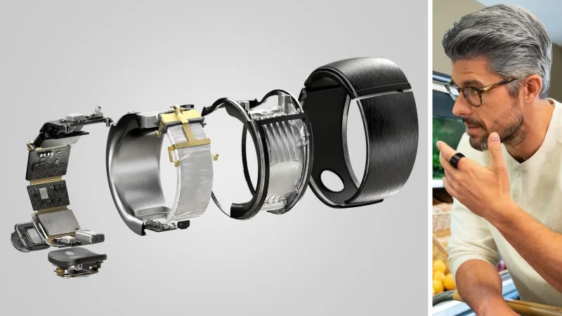

4 de Octubre del 2019 por Jose Luis Plata
Ni el desierto del Sáhara, ni el de Arizona, ni el páramo de los Monegros. El lugar más insoportablemente cálido del planeta es el desierto salado de Lut o Dasht-e Lut, al sudeste de Irán. Las mediciones de satélites de la NASA han registrado la mayor temperatura ambiental (sin ayuda de incendios, volcanes, géiseres o actividad humana) del mundo: 70,7 grados centígrados (según el satélite Aqua de la NASA en 2005).
4 de Octubre del 2019 por Jose Luis Plata
Se llama Nebulosa Boomerang y es el lugar más frío conocido del Universo. Su temperatura es de -272 grados centígrados (-458 Fahrenheit), más frío que el halo surgido tras el Big Bang. Ahora, el telescopio ALMA en Chile (Atacama Large Millimeter/submillimeter Array) ha obtenido la imagen más completa que revela su verdadera forma.

4 de Octubre del 2019 por Jose Luis Plata
Amazon ha presentado hoy un puñado de altavoces y dispositivos inteligentes. El más llamativo de todos es este pequeño anillo con Alexa que puedes llevar en el dedo con relativa discreción. El nuevo Echo Loop es, en esencia, un Amazon Echo en miniatura: tiene dos micrófonos, un diminuto altavoz y el asistente de voz Alexa, que te conecta al ecosistema de Amazon y a la domótica de tu casa.